Decisions for real-world cases: an open 4B model, #1 on JevBench for text and images
imajev-4b · JevBench v1.4.2.2, scored 27 Sep 2026 · Image JevBench v0.1.3, released 28 Sep 2026 · run by the benchmark's maintainer
I built a system that makes the small, repeated decisions a team makes all day: does this photo match the listing, is this the item we shipped, which queue owns this ticket. It answers in the options you set, acts when it is sure, and hands the rest to a person.
- #1 of 91
- JevBench Score, ahead of Jev 1.13.0, the closed original it followsv1.4.2.2 · scored 27 Sep 2026 · board
- #1 of 49
- Image JevBench: decisions from photos, ahead of Jev-Omni (12B)v0.1.3 · released 28 Sep 2026 · board
- #3 of 56
- DecisionBench: ahead of GPT-5.6 Luna, DeepSeek V4.1 Flash (552B) and GLM-5.3 Flash (320B)eng, v1 · 28 Sep 2026 · leaderboard
Thousands of small checks, each one a person's time
Operations, support, QC and back-office teams answer the same narrow questions all day. Each takes a person seconds to a minute; added up, they fill whole shifts.
- Does the photo match the listing?marketplace and D2C catalogue
- Is the returned item the one we shipped?returns and refunds
- Is this part chipped?production-line QC
- Which queue does this ticket go to, and is it urgent?customer support
- Does this refund meet the policy?support and finance
- Does this email contradict the CRM record?back office and records
A chat model can answer these, but not in a form a workflow can use. It replies in prose that has to be parsed before it can go in an if. The frontier vision APIs we measured took 5 to 8 seconds per answer, every call is billed, and customer photos leave the building. And unless it is prompted to, a chat model does not say "I can't tell", so there is no clean point at which to hand a case to a person.
A general chat model
- Free-text answer to parse
- Seconds per call, a bill per call
- Photos go to a hosted API
- Guesses when the evidence is thin
What a team actually needs
- One of the answers you allowed, with a probability
- Fast enough to sit inside a queue
- Runs where the data already is
- Says can't tell, so a person can take it
A decision system that knows when to hand over
imajev is a family of small open models (2B, 4B and 9B parameters) trained for one job: read the evidence a business already has and answer a closed question with a calibrated probability.
In: the evidence and a closed question
A photo, or two (what we shipped and what came back), the record you already have, and a question with the answers you allow: which field is wrong? same item, yes or no? which department?
Out: a probability for each answer
Every allowed answer gets a probability, plus one for can't tell. No prose to parse; the result drops straight into an
if.Act when sure, route the rest
The business sets a confidence bar per decision, based on what a mistake costs. Above it the system acts; below it, or when it says can't tell, the case goes to a person.
Runs on your own hardware: a Mac or one GPUNo per-call API billPhotos and customer data stay in-houseOpen weights, Apache-2.0

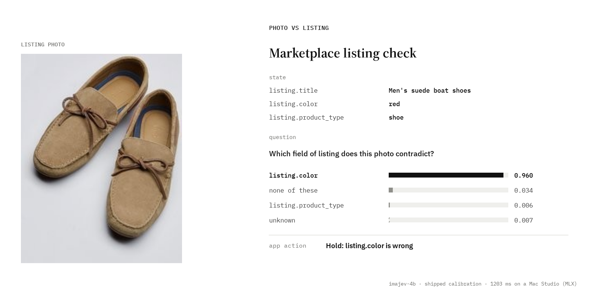
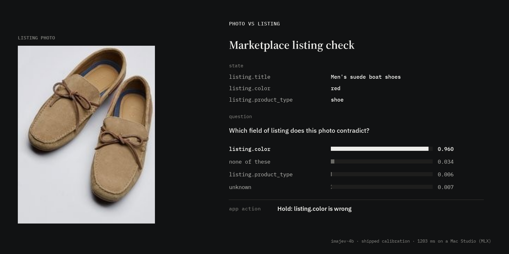

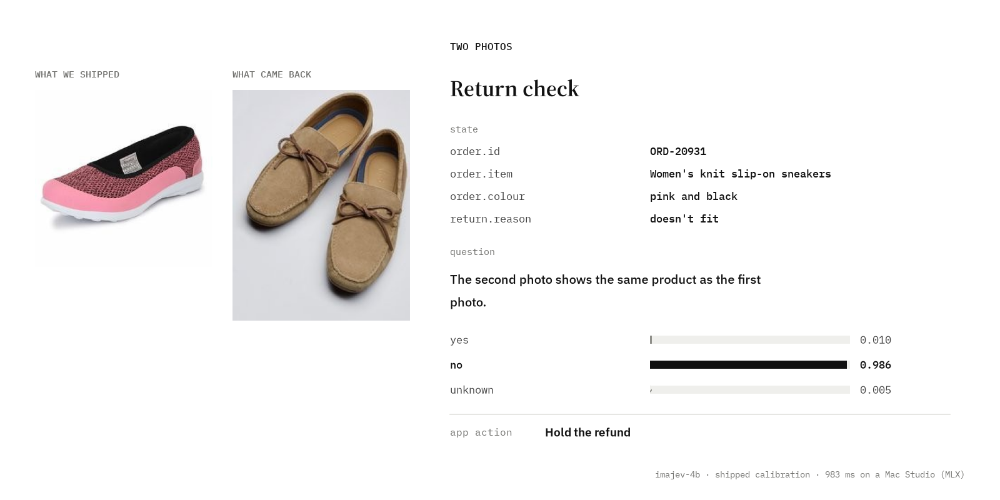
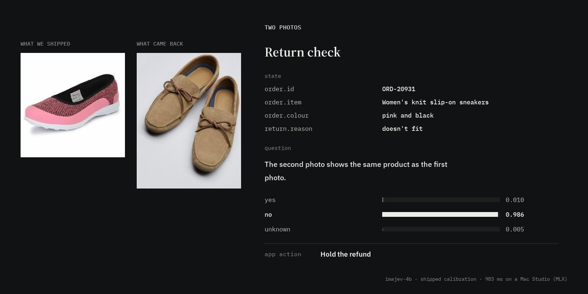

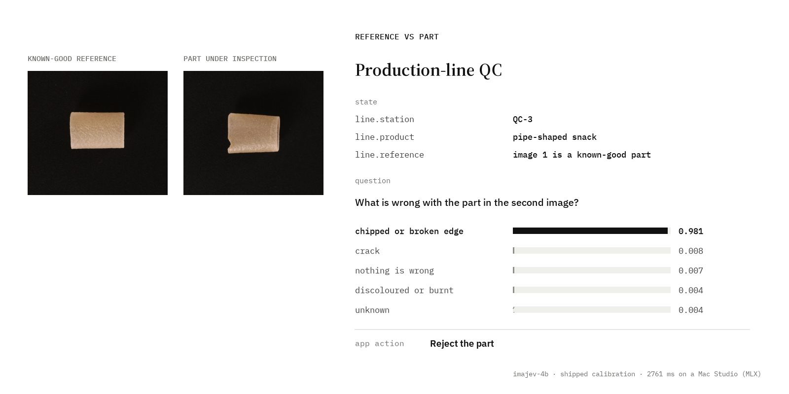
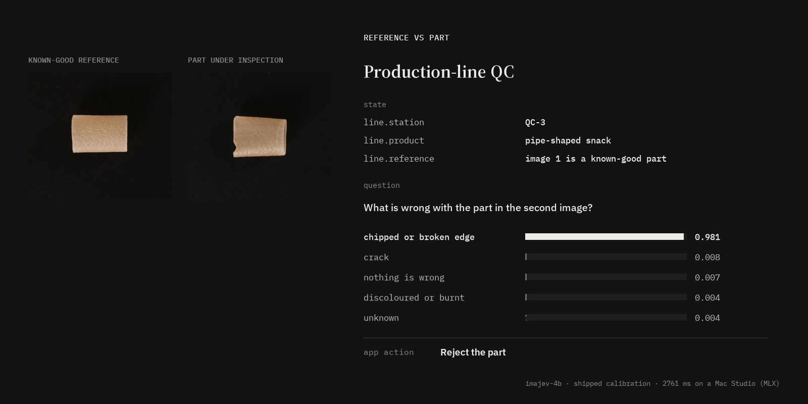

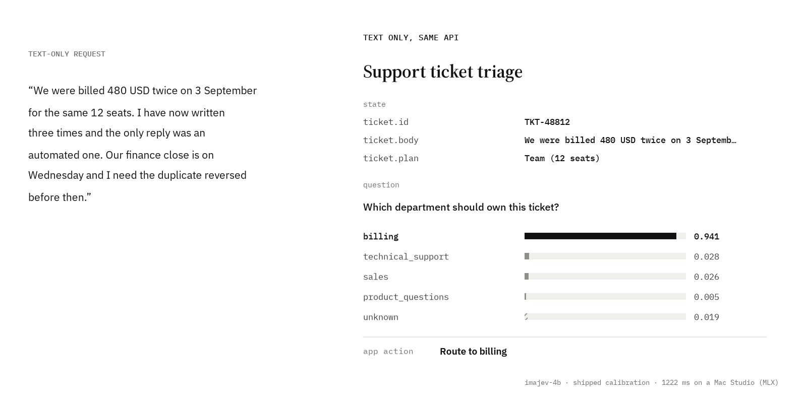
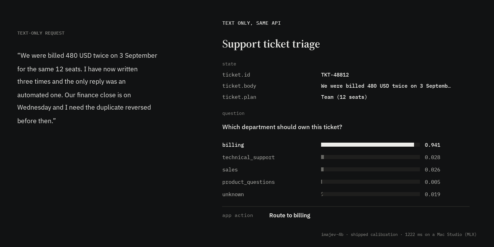
These are real outputs of imajev-4b with its shipped calibration, from the checked example apps on the project site. Every clickable combination in those apps was run and compared with the right answer; the misses are published too. One worth knowing: with a blank payment note, the model answered "not paid" instead of can't tell. That is why a pilot on your own cases comes before any automation.
Independent boards, run by their maintainers
The three rankings below were measured by the benchmarks' own maintainers, not by me. Each links to its source. Rankings move as new systems are added, so each is quoted with its version and date.
v1.4.2.2 · scored 27 Sep 2026
JevBench ranks decision models of the Jev class. Its score weighs four things equally: accuracy (Intelligence), whether the stated confidence can be trusted (Calibration), speed and cost. imajev-4b leads Jev 1.13.0, the closed commercial model whose interface it follows, by 4.08 points. It is #3 on accuracy alone; the lead comes from balance, and it has the best calibration of the top 8 (80.4).
| # | System | Score | Intell. | Calib. |
|---|---|---|---|---|
| 1 | imajev-4bopen weights | 67.37 | 52.2 | 80.4 |
| 2 | Plumb-4B | 65.84 | 53.0 | 75.5 |
| 3 | decider-4b v2 | 64.13 | 49.4 | 75.0 |
| 4 | Jev 1.13.0TypeSafe AI, closed | 63.29 | 53.1 | 76.3 |
| 5 | JevK5 v0.2.0 | 62.04 | 48.9 | 74.5 |
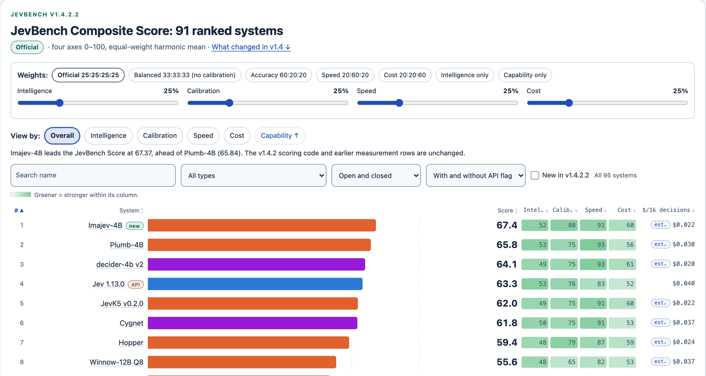
Top 5 of 91 (Speed and Cost columns on wider screens). Board: benchmarkheaven.com/jev-models (maintainer Florian Standhartinger) · data: jevbench-v1.4.2.2-results.json. Measured with one option order and the shipped calibration file. The board estimates cost at $0.022 per 1,000 decisions (Jev $0.040), from the base model's public list price.
released 28 Sep 2026
The same board's image benchmark: 684 decisions made from photos, screenshots and documents. imajev-4b scores 76.39, ahead of Jev-Omni, a 12B model (73.10), and NeoHorse Jev 4B (71.94). Its accuracy on the sealed items is 83.3%, second of the 44 systems that run on your own hardware.
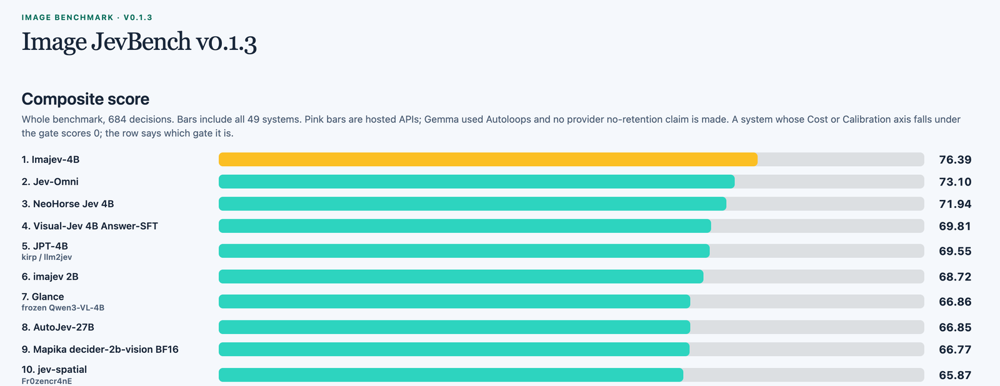
Board: benchmarkheaven.com/image-jev-bench (screenshot 29 Sep 2026). Measured on the fast server setting; the board notes that this version's fresh sealed items are its own synthetic images.
leaderboard, 28 Sep 2026
79.65 across 23 tasks and 23,900 rows, every row answered. It is ahead of much larger general models: GLM-5.3 Flash (320B, 73.41), DeepSeek V4.1 Flash (552B, 70.68) and GPT-5.6 Luna (69.04), and of Jev 1.13 (71.90). The only two models ahead are the benchmark team's own, so imajev-4b is the highest-scoring model not built by the benchmark's team. On the separate Reasoning track it is #3 too (80.58), behind GLM-5.3 Flash and GPT-5.6 Luna.
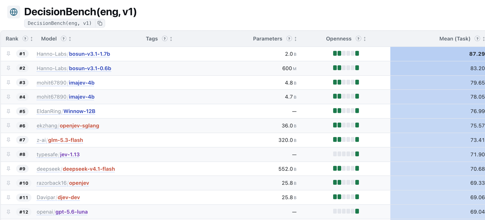
Leaderboard: Hanno-Labs/decision-bench-leaderboard (screenshot 28 Sep 2026) · registry: decision-bench-results (results PR #68).
97.5% of them right
The confidence bar is the dial a business controls. Raise it and fewer cases are automated, with fewer mistakes; everything below it goes to a person, including every can't tell. imajev-4b on the 279 test questions of ImajevBench:
| Act when at leastBar | Decided automaticallyAuto | Of those, rightRight | To a personPerson |
|---|---|---|---|
| 80% sure | 63% | 94.9% | 37% |
| 90% sure | 58% | 97.5% | 42% |
| 99% sure | 40% | 100% | 60% |
ImajevBench is the project's own benchmark (photos, records and text; 21 questions whose honest answer is can't tell), built to be hard. Treat these as a starting point: the right bar for your team comes from a few hundred of your own cases. Source: README, "Automate what is clear, route the rest".
the whole project
About a million training decisions in four stages, on open base models, every run included. Small models and a careful data pipeline, not a large compute budget, produced these results, and the same pipeline works on your own data.
What I can build for your team
Each step stands on its own and ends with something you can use, so you can stop after any of them.
Decision audit
Pick one workflow. We list the decisions in it, how often each happens, what a mistake costs, and what evidence (photos, records, text) is already on hand.
the decisions worth automating, written as closed questions, with a target bar for each
Pilot on your own data
A few hundred of your real cases, labelled with your team, including the ones nobody can decide. The model runs on them on your hardware.
a measured accuracy-vs-automation curve on your cases and a recommended bar
Tuning, if the pilot needs it
Where accuracy falls short, I train a small adapter on your decisions and fit its calibration, with the same recipe used for imajev.
a model tuned to your cases, re-measured on held-out ones
Production hand-off
Served on your own machines and wired into your queue or tools: the routing rule, a review queue for hand-offs, and tracking of the automated share and spot-checked accuracy.
a running system, documentation, and a team that knows how to adjust the bar
Good fit
High-volume, well-defined decisions with a clear set of answers: listings, returns, QC, ticket routing, refunds against a policy, records against documents. E-commerce and D2C operations, support, QC and back-office teams.
Not a fit
One-off strategic calls, open-ended writing, or anything that needs a safety, medical, legal or hiring certificate. The system answers the questions you set; it does not replace the judgement behind them.
Have a workflow like this?
Tell me which decision your team makes most often and roughly how many times a week. I will tell you whether it is a good candidate and what a pilot would measure.
Message me on X: @mohitt_garg
Mohit Garg · process consultant and builder · mohit67890 on GitHub and Hugging Face